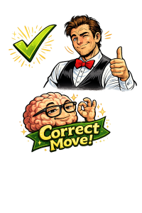

Blackjack Strategy Guide
Blackjack is one of the few casino games where strategy can significantly reduce the house edge. By making mathematically correct decisions based on your hand and the dealer’s visible card, players can improve their odds compared to guessing or playing by instinct.
Learn It Fast. Then Test It.
Reading strategy is good. Actually using it under pressure is better. Most players think they know basic strategy until they get hit with ugly hands like 16 vs 10.
What You’ll Learn on This Page
- How the dealer’s up card changes your best move
- When to hit, stand, double, and split
- The common mistakes that quietly drain money
- Where to practice basic strategy live on this site
The objective of blackjack is simple: beat the dealer by getting as close to 21 as possible without going over. Number cards are worth their face value, face cards count as 10, and aces can count as either 1 or 11 depending on what benefits your hand.
Understanding the Dealer's Card
Your decisions in blackjack should always consider the dealer’s visible card. Dealers must follow strict rules and typically must hit until they reach at least 17. Because of this, some dealer cards are considered strong while others are weak.
When the dealer shows a 2 through 6, they are more likely to bust. When the dealer shows a 7 through Ace, they have a better chance of making a strong hand.
Basic Blackjack Strategy Chart
This simplified blackjack strategy chart shows the mathematically best move based on your hand and the dealer’s up card.
Legend: Hit Stand Double Split
| Your Hand | Dealer 2–6 | Dealer 7–Ace |
|---|---|---|
| 8 or less | Hit | Hit |
| 9 | Double | Hit |
| 10 | Double | Hit |
| 11 | Double | Double |
| 12 | Stand | Hit |
| 13–16 | Stand | Hit |
| 17+ | Stand | Stand |
| Pair of Aces | Split | Split |
| Pair of 8s | Split | Split |
| Pair of 10s | Stand | Stand |
| Pair of 5s | Double | Hit |
Don’t Just Read the Chart
The fastest way to actually remember this stuff is to use it in live hands. Reading strategy feels smart. Using it without screwing up is the real test.
Many blackjack players lose money not because the game is unbeatable, but because they make decisions based on emotion or superstition instead of probability. Even small mistakes repeated over time can significantly increase the house edge.
Common Blackjack Mistakes
| Situation | Mistake | Better Play | Why |
|---|---|---|---|
| 16 vs Dealer 10 | Standing | Hit | The dealer has a strong card. Standing gives them a big advantage. |
| Pair of 8s | Not splitting | Split | 16 is a weak hand. Splitting gives two chances to build stronger hands. |
| Pair of 10s | Splitting | Stand | 20 is already one of the strongest hands in blackjack. |
| Dealer shows Ace | Taking insurance | Avoid insurance | Insurance is usually a losing bet unless you are counting cards. |
Quick Strategy Test
You have 16. Dealer shows 10. What’s the correct basic strategy move?

Test Your Blackjack Skills
Understanding blackjack strategy is the first step, but the best way to learn is through practice. Our blackjack trainer presents real game situations and lets you choose the correct move based on basic strategy.